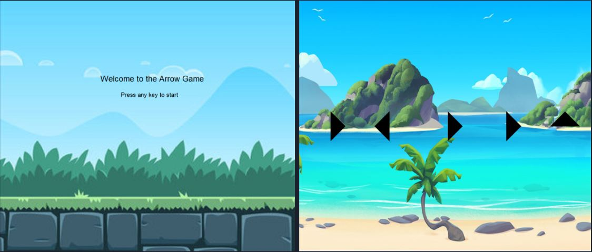

We made a game about designing a cake aligned the the user's choices. In this design a cake game the user is asked questions and makes the decisions for cake flavor, frosting, and toppings.
Arrow Game

In our game the player uses the arrow keys to complete a series of arrows onscreen. The number of arrows and levels get harder as the player progresses and they score more points. Making a mistake costs time as it resets the sequence of arrows present.
Flappy Minion
This game is a twist on flappy bird using minions themes sprites on scratch. The goal of the game is to get as far as you can to rack up the highest score. Using the inputs spacebar or left click is the minion's only movement key.